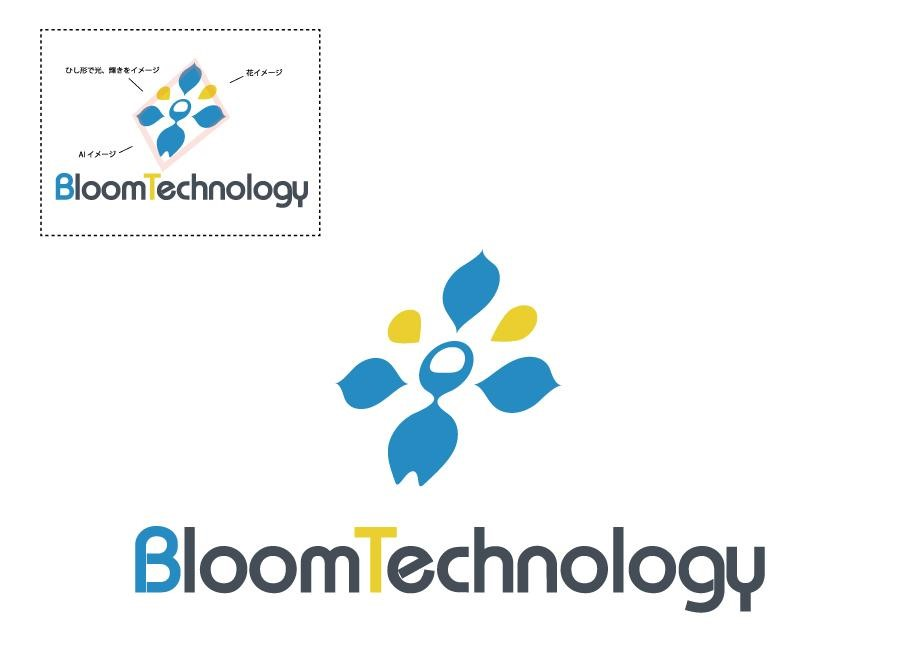
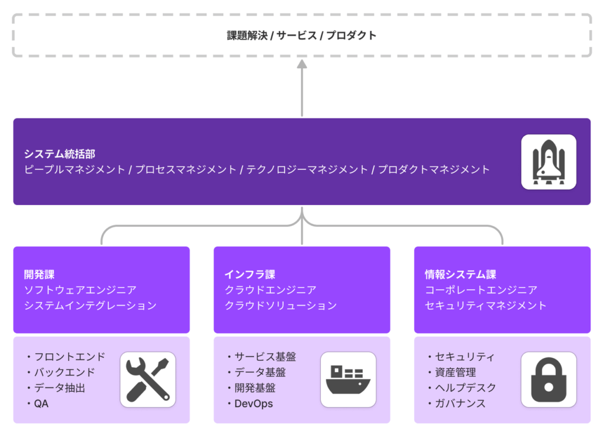
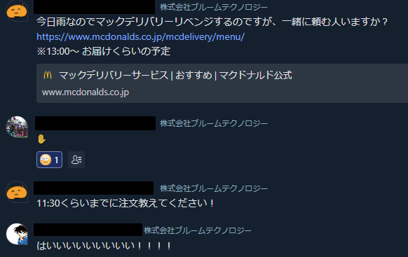
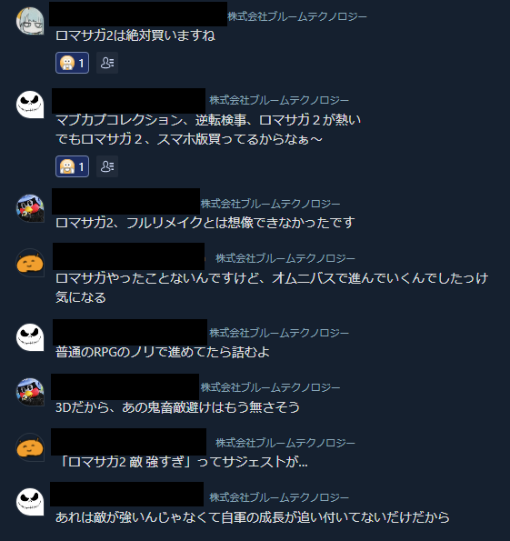
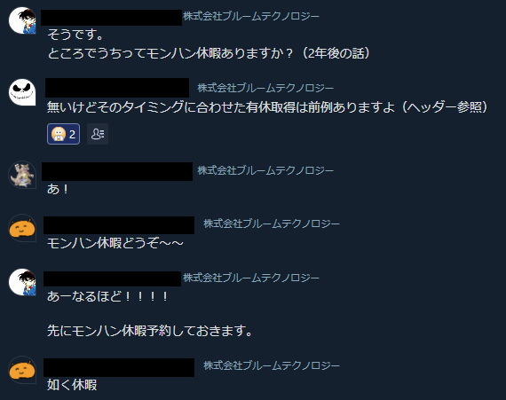
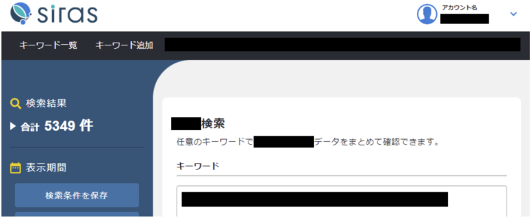
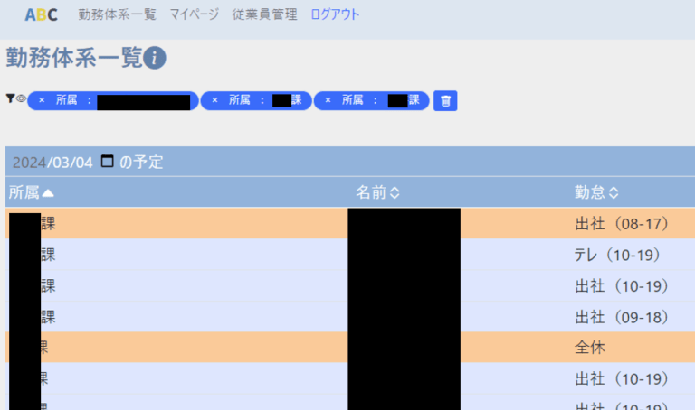
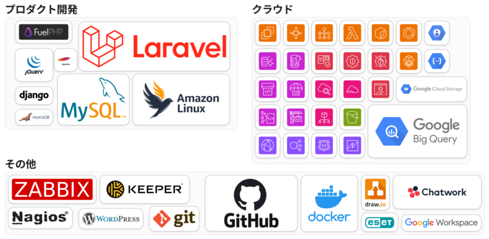

革新的なデータインフラを創る
はじめに
ブルームテクノロジーでは、データインフラとなるプロダクトを開発し共に組織の仕組みを変えていく仲間を探しています。
このサイトでは、エンジニアの皆さんに知って欲しい情報だけを「ぎゅっ」と厳選してご紹介ができればと思います。
ブルームテクノロジーは「デジタルとサイエンスのチカラで、これまでのフカを、新しいフカにかえていく。」をミッションに、グループ各社へ組織横断的なデータドリブン推進とデータソリューション提供を開発・提供しています。
2021年10月、事業内容をWebマーケティング事業から「AIソリューション事業・データ分析事業」へ生まれ変わると共に、AIやビッグデータを活用したデータサイエンスにも注力する横断的組織に変革を遂げてきました。2023年にはエンジニアチームがイチ部門として組織拡大すると共に、プロダクト開発のさらなる加速や組織のインフラとなるサービスを作ることを目標に積極的にエンジニア採用を行っています。
OUR MISSION - 企業理念
デジタルとサイエンスのチカラで、これまでのフカを、新しいフカにかえていく。
常に新しい価値を創造して、変化を恐れず「フカ（孵化、付加）」していくことで古い殻を打ち破る。「ブルームテクノロジー」は、実現不可能だと考えていた「フカ（不可、負荷）」もデジタルとサイエンスの技術の融合により、実現可能なチカラに変えることができると信じています。
OUR VISION - 目指す姿勢
少し先の未来の日常を、今よりもう少し便利で心地よい社会にする。
未来は想像や空想の世界だと考えていた時代は過ぎました。創造した数年後の未来を実現できる世界へと変えていくなかで、私たちの日常も常に変化していきます。「ブルームテクノロジー」では、大きな変化でなくても、あったらいいなという感覚を大切に、日常に溶け込むような技術を開発していきたいと考えています。
OUR VALUES - 価値観
少し先の未来の日常を、今よりもう少し便利で心地よい社会にする。
- 何事も、まずは一歩前へ - One Step Forward
できないではなく、できるために必要なSTEPをみんなで共助しよう。 - 状況を楽しもう！ - Fun Time
アナタにとって価値のある時間にするために、今できることを実践する。学んだり、アドバイスを求めたり、今できる「あなたらしさ」を楽しみましょう。 - 素晴らしい！をカタチに - How Wonderful
アナタにとって「素晴らしい！」コトを見つけて、大切にしていきましょう。世界観を思い描くことができたときのサポートを惜しみません。
全社共通の会社紹介資料です。
開発体制
ユーザーダイレクトな開発
私たちはグループ企業や関連会社をクライアントとし、データ利活用を促すための様々な施策をご提案しています。グループ会社ゆえにユーザーとの距離はとても近く、カスタマーサクセスなど様々なチームを介することなくダイレクトにフィードバックを得て、アプリケーションに反映できる環境があります。
Customer Obsessionを実践できる環境
また、開発することを目的にするのではなくニーズに基づき行動し、クライアントが本当に求める価値を最大化するために全力を尽くすことが出来ます。距離の近さがCustomer Obsessionを実践できる環境を生み出しています。
安定した経営基盤 × チャレンジ
大胆なチャレンジを行うことができる、ボトムアップの風土があります。安定した経営基盤があるからでこそ臆することなく手を挙げやすく、「素晴らしい！をカタチに」する経験に繋げていくことが出来ます。
3つのチーム
ブルームテクノロジーのエンジニア組織であるシステム統括部には、WEBアプリケーションを開発する「ソフトウェアエンジニア」や基盤構築全般を担当する「クラウドエンジニア」セキュリティやファシリティ管理を行う「コーポレートエンジニア」が所属しています。
組織上は3つのチームに分かれており、それぞれが自身の業務領域に専念しスペシャリティを発揮できるようにしています。
私たちは「データドリブンをテクノロジーとプロダクトで推進」していくチームです。データ活用を「仕組み化」していくことをプロダクト開発によって実現しようと考えています。
領域ごとにチームを分けていますが決して縦割りではなく、システム統括部がこのチームを横断的にマネジメントしているので、業務上はひとつのチームのように振る舞うことが多いです（縦軸の組織に対して、横軸のプロジェクトが発生するようなイメージ）。
メンバーの大部分は20代～30代で構成されており、役職関係なくお互いを「さん」で呼び合い、雑談専用のグループチャットでコミュニケーションを取る程度にはフランクです。
こんな感じの雰囲気です。（締める時はちゃんと締めてます！！）
  立ち上げたばかりのサービスがたくさんあります
プロダクトドリブンに課題解決をしていこうと考え始めたのは2023年で、まだまだ若い開発体制です。まだまだ立ち上げたばかりのサービスもたくさんあり、0→1にも1→10にも積極的に携わることが出来ます。
例えば「siras」というサービス。これは2023年12月に新規リリースを行いました。
sirasは、ひとことでお伝えすると施策成果データの組織横断化プラットフォームです。現時点ではまだクローズドに展開しているサービスなので詳細説明は省略させて頂くのですが、これまで私たちブルームテクノロジーが所属するグループ企業の各社が抱えていたデータ活用課題を横断的に解決していく為のプロダクトです。
他にも新規サービス開発を行っていたり、現在はだいたい年1~2のペースで新規プロダクト開発を行っています。カジュアル面談などで詳しくお話できればと思いますので、ぜひお気軽にお問い合わせください。
足りないものは自分たちで作る文化
ちなみに、クライアント向けの開発だけでなく「足りないものは自分たちで作る文化」もあります。社内システムである「ABC」のリリースがちょうどよい事例です。
こちらは社内専用のシステムで「誰が・いつ・どこで働いているのか」を可視化するツールです。リモートワーク、時差出勤など勤務状態が複雑になるにあたり一括で確認できる状態にするために開発されました。特に優れているのは休憩時間についても見える状態になっていることで、ミーティング時間調整などに利用されています。
今は、組織の立ち上げ期
新しい技術選定の実施、コーディングルールの抜本的な見直し、toC向けのWEBサービス、分岐用途のSaaS開発、DevOpsの強化とDeveloper Experienceの向上、包括的なデータマネジメント……まだまだチャレンジしてみたいことがたくさんあります。
まだ固定観念の無いフラットな組織を、一緒にスケールさせていくのにご協力いただけないでしょうか？ 是非お待ちしています！
ページトップに戻る技術スタック
WEBアプリケーションの開発にはLaravelを、サービス基盤はAWSを、データ基盤はGCPを用いて構築しています。
NotePM, Notionと、Chatwork上で技術共有専用のグループチャットを作成することで、ナレッジシェアの取り組みをしています。また、社内では周囲のエンジニアに気軽に質問できる環境です。
勿論、外部の勉強会やセミナーにも（上長からの許可は必要ですが）参加することが出来ます。原則的にメリットのある学習機会の提案は推奨している為、承認までのスピードは速いです。
ページトップに戻る開発モデル
ウォーターフォールとアジャイルを柔軟に使い分ける
私たちはウォーターフォールモデルを悪としません。そしてアジャイル開発だけを善ともしません。状況や要求、プロジェクトの性質によって開発モデルを切り替え、乗りこなしていくことを理想とします。
基本スタイルとしてウォーターフォール開発を行うことが多いですが、状況によって1つのウォーターフォールを短く切り出し素早く小さな開発で価値を提供していきます。短いものだと1～数週間程度で開発を行う為、スプリントに近い概念になります。
これは、私たちのチームが「Fail Fast」「Start Small」な指針で行動していくことを体現しています。
ページトップに戻るエンジニアリングポリシー
ブルームテクノロジーでは3つのバリューを掲げています。これらを具体的な行動として示しバリューを「チームで満たす」ため、エンジニア組織では独自に「エンジニアリングポリシー」を掲げ、これに基づいた行動を心がけています。
Give First
私たちは誰かの学びの為に自分から行動します
共助精神をもって自分から先に貢献します。自分にとっての当たり前に再現性を持たせ、全員で未来のチームを育成します。
エンジニアにはオープンソースという素敵な文化がありますが、あれこそまさに共助の表れでないかと考えています。このように互いに助け合い、補い合い、より良くするための行動を自ら始めることで、未来のチームはより良いものになっていくと考えています。
- 自身の担当領域外のプロジェクトにおいても積極的に意見を述べ、バックログの重み付けへの議論に参加しました
- 得に指示を出されたわけではないけれど、より資料が読みやすくなるような改良を自分で調べて適用してみました
- 新人に率先して手を差し伸べ、問題解決を手伝いました
Fail Fast
私たちは早く失敗し、早く成長します
上手に早く失敗することで経験を活かします。失敗を恐れずチャレンジし、成長機会を勝ち取ります。
失敗は成功のもとと言いますが、上手な失敗は成功に勝る成長機会になり得ると考えます。失敗を恐れて行動を躊躇うのではなく、失敗してもいいからやってみよう！の精神で取り組んでみましょう。周囲は他社の失敗を嘲ったり怒ったりするのではなく、褒めたり適切に叱ることで成長に導いてあげましょう。また、FailFastは心理的安全性を高める事や最小最速の開発生産性の実現にも繋がっていきます。
- 初めてやる業務だったが、ポジティブに成長機会と捉え自ら手を挙げてみました
- 失敗したことを速やかに上司・先輩に報告し、自らそのフィードバックを貰いにいきました。どうするのがベストだったのか考え直し、次同じ失敗をしないように心がけました
- 部下・後輩が失敗したときに"何故できないのか"と詰めずに「いい成長機会を得られたね。次はこうしてみよう」と建設的なアドバイスを伝えることが出来た
Start Small
私たちは大局的なゴールを目指し、小さく始めます
理想の姿を定義し、到達する為にまず行動します。フィードバックを活かし、改善プロセスある計画を立てます。
理想ドリブンで動きましょう。そして偉大な計画を前にしり込みするのではなく出来る事から着実に進めていくことで、確実に理想ゴールへ近づいていきます。段階的に完成に近づけるための小さな計画を立てることで良いモノが出来上がると考えます。
- いきなり100%の完成を目指さずに、40%進捗の成果物を見せてフィードバックを貰ってみました
- WHY-WHAT-HOWが明らかになった状態で、それを着実に達成するための期日行動を考えてみました
- 本当にユーザー価値のある機能かの確証はないが、まず作って提供し、そのフィードバックから改善することで理想に近づいてみました
- 何度もフィードバックを貰いながらMVP開発をすることで、ようやく理想形にたどり着きました！
Day One
私たちは常に入社初日の気持ちで居続けます
成果や功績を残しても満足せず、常に初心を忘れません。警戒と緊迫感を維持し、慣れや停滞の無い志を持ちます。
その成功は恒久的に利益をもたらし続ける事かを常に考え続けましょう。成功・成果といった結果は静的ですが、それを取り巻く環境は常に動的である筈です。周りの変化に敏感になり続け、常に最新のベストプラクティスを追い続けます。
- 以前リリースした機能がすでに現状に合わなくなっていることを察知し、細心の運用にフィットするように作り直しました
- 今のやり方では1年後に寿命が訪れるアンチパターンとなっていたため、思い切ってリアーキテクチャを試みました
- 半年後の自分の理想のキャリアビジョンを常に持ち続けるようにし、その為に必要な自分の行動をいつもアップデートするようにしました
評価
半期に一度、人事評価と次の半期の個人目標設定を行います。直属の上司と評価面談を行った上で、個人目標の達成度合いで絶対評価がなされます。
人事評価では昇給などの評価がなされる他、昇降格の評価もなされます。従業員には1~10のグレード制が適用されており、グレードに応じた期待役割やミッションが課されます。このミッションに対し、リンクした個人目標を設定し実践します。
評価面談は、半期の成果をアピールする機会として存分に使ってください！
また、個人目標達成進捗やアクションプランに伴走していくために、定期的に1on1ミーティングも実施しています。システム統括部のEMは1on1を「マネージャーの時間を自由に使って良い時間」と定義しています。是非併せてご利用ください。
ページトップに戻る働き方・福利厚生
待遇や福利厚生などに関する情報をぎゅっとまとめました（最新情報は求人を確認ください）。
働き方
- 一部リモートワーク（週1のみ出社）
- 服装・髪型・ネイル自由
- 時差出勤制度（7:00～12:00のなかで1時間ごとのシフト選択制）
- 完全週休2日制（土・日・祝日）
- 夏季休暇（6日程度）
- 年末年始休暇（6日程度）
- 入社日休暇
- リフレッシュ休暇
- 慶弔休暇
- 有給休暇 ※有給休暇消化率80％以上
- 産前産後休暇（取得実績あり）
- 育児休暇（男女ともに取得実績あり）
- 喫煙室あり
各種手当
- 通勤交通費支給（上限5万円まで/月）
- 養育手当（子ども1⼈につき︓⽉5000円）
- 慶弔見舞金
福利厚生
- 一部リモートワーク（週1のみ出社）
- 服装・髪型・ネイル自由
- 通勤交通費支給（上限5万円まで/月）
- 養育手当（子ども1⼈につき︓⽉5000円）
- 慶弔見舞金
- Udemy受講し放題
- 書籍購⼊費負担
- セミナー参加費負担
- 各種社会保険完備
- 関東ITソフトウェア健康保険組合加⼊
- 各種優待サービス加⼊
- 養⽼保険加⼊ ※勤続3年以上の⽅に会社負担で加⼊
- 産業医来社
- 定期健康診断
- 有名テーマパーク優待制度
- 社員旅⾏（完全任意・会社負担）
- 退職金
WE ARE HIRING.
まずはカジュアル面談からでも！
開発チームの募集職種
WEBアプリケーションエンジニア（シニア候補） WEBアプリケーションエンジニア（プロジェクトマネージャー候補）
インフラチームの募集職種
情シスチームの募集職種
現在募集しておりません
その他リンク
エンジニア職種 募集一覧 ブルームテクノロジー技術ブログ 【取締役インタビュー】”あったらいいな”をカタチにする、ブルームテクノロジー創業秘話
ページトップに戻る